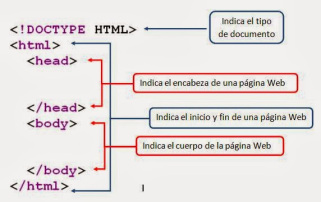
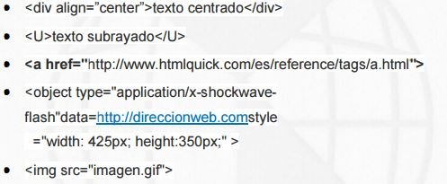
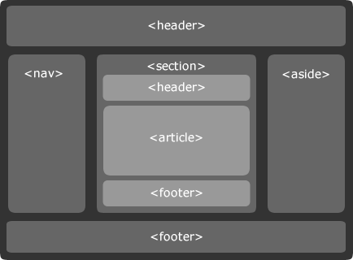
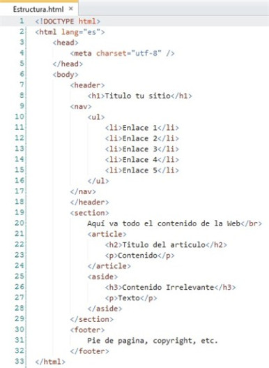

Estructura global de un documento Web
La estructura de un documento nos permitirá conocer el inicio y el final del mismo, sin dejar a un lado los contenidos, los tamaños de la hoja y el margen con el que contará y se divide en zonas principales que son:
Dentro de los apartados el contenido el distinto y puede manejar un número mayor de etiquetas y clasificaciones que se complementas con lenguajes de programación como java, CSS3 y otros más. Todo lo que se encuentra dentro de este documento se puede localizar mediante exploradores de internet siempre y cuando se cumpla con los requerimientos de localización de documentos.
Las características de los documentos se pueden modificar dependiendo del lenguaje de programación con el que se trabaje, es decir, no es la misma estructura de un documento XML, HTML, PHP, MYSQL, SAP, las diferencias se notarán en la sintaxis de cada uno y las instrucciones y manejos de códigos con los que se cuenten.
Al hablar de un documento en general, sin intervenir en HTML o cualquier lenguaje de programación, podemos notar que la estructura es la misma, cuenta con un título o encabezado, el contenido o cuerpo y dentro del contenido se puede aplicar información adicional como imágenes, citas, tablas, etc.
Es importante conocer los lenguajes de programación que se pueden acoplar a otros y la codificación que requiere como UTF8 o ASSCI, para saber los riesgos de incompatibilidad posibles dentro de cada elemento.

Elementos básicos: texto, vínculos, listas, tablas, objetos, imágenes y aplicaciones Los elementos básicos con los que cuenta un documento HTML, son el medio por el cual el usuario tiene interacción con la información, los elementos que son más utilizados son:
VINCULOS
IMAGENES
OBJETOS
APLICACIONES

Las anteriores etiquetas son solo una muestra de la gran variedad de opciones disponibles con las cuales definir una mejor apariencia y equilibrio visual en el diseño de un website.
ESTRUCTURA DE UNA PAGINA WEB Y SU DISTRIBUCIÓN

